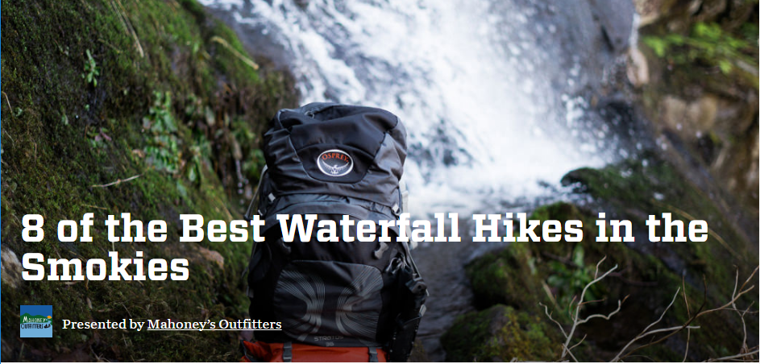
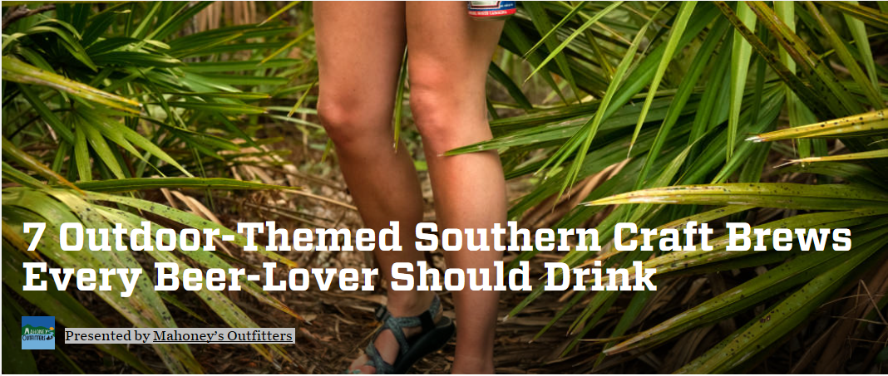
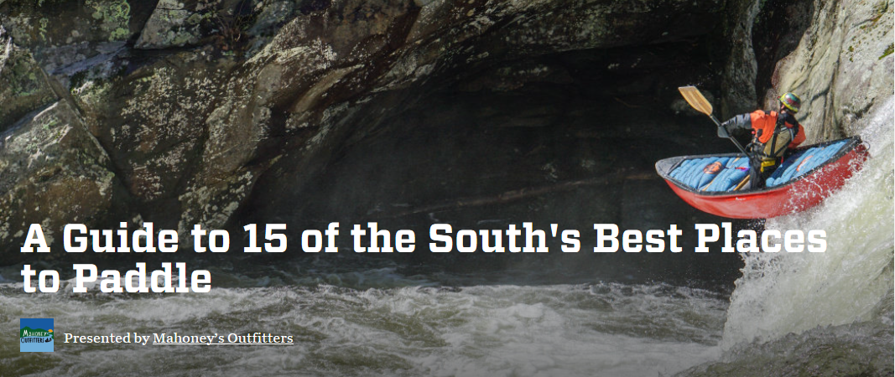

        <div class="row">
            <div class="box">
                <div class="col-lg-12">
                    <hr>
                    <h2 class="intro-text text-center">Mahoney`s
                        <strong>Blog</strong>
                    </h2>
                    <hr>
                </div>
                <div class="col-lg-12 text-center">
                    
                    <h2>8 of the Best Waterfall Hikes in the Smokies
                        <br>
                        <small>Presented by Mahoney’s Outfitters</small>
                    </h2>
                    <p>The Great Smoky Mountains may be known for their enchanting mist and spectacular views, but these rounded peaks have another claim to fame: they are home to waterfalls of all shapes and sizes. There’s nothing quite like kicking off your shoes and cooling down next to a beautiful waterfall in the heat of a Southeastern summer, and with more than 20 waterfalls in the park, the Smoky Mountains are the perfect place to do just that.
					Whether you’re looking for a flowing cascade or an impressive chute, a drive-by photo opp or a strenuous all-day hike, the Smokies have something for you. We narrowed the full list down to eight of the best waterfall hikes in the Smokies to try out the next time you visit the Southeast.</p>
					
                    <a href="https://sites.rootsrated.com/380/mahoney-s-outfitters/stories-8-of-the-best-waterfall-hikes-in-the-smokies/index.html"target="_blank" class="btn btn-default btn-lg">Read More</a>
                    <hr>
                </div>
                <div class="col-lg-12 text-center">
                    
                    <h2>8 Off the Beaten Path Festivals in the Southeast
                        <br>
                        <small>Presented by Mahoney’s Outfitters</small>
                    </h2>
                    <p>Perhaps Coachella sold out before you could say Beyoncé, you just can’t imagine fighting the crowds at Bonnaroo for one more year, or maybe you’d rather hang out riverside than beachside. No matter what the reason, we understand your desire for an intimate (but still larger than life) music experience this summer, so we picked eight of our favorite festivals in the Southeast that make for the perfect weekend getaway. Many involve camping, some are by the water, a few encourage family attendance, and all are worth checking out.</p>
                    <a href="https://sites.rootsrated.com/380/mahoney-s-outfitters/stories-8-off-the-beaten-path-festivals-in-the-southeast/index.html"target="_blank" class="btn btn-default btn-lg">Read More</a>
                    <hr>
                </div>
                <div class="col-lg-12 text-center">
                    
                    <h2>7 Outdoor-Themed Southern Craft Brews Every Beer-Lover Should Drink
                        <br>
                        <small>Presented by Mahoney’s Outfitters </small>
                    </h2>
                    <p>Local craft brewing is on the rise in the American Southeast, and the scene is geared especially towards those with a penchant for the outdoors. Because of the recent changes in Tennessee’s ABV restrictions, hospitable temperatures year-round, and a practically endless selection of outdoor activities, the Southeast is the place to spend some time in nature and enjoy a good beer. Whether it’s sipping a beer as you float down a river or getting a cold pint after a long day on the trails, the breweries here honor and exemplify the adventure seekers that support and sustain them. Here, we put together a list of seven beers that pair particularly well with outdoor pursuits.</p>
                    <a href="https://sites.rootsrated.com/380/mahoney-s-outfitters/stories-7-outdoor-themed-southern-craft-brews-every-beer-lover-should-drink/index.html"target="_blank" class="btn btn-default btn-lg">Read More</a>
                    <hr>
                </div>
                <div class="col-lg-12 text-center">
                    
                    <h2>A Guide to 15 of the South's Best Places to Paddle
                        <br>
                        <small>Presented by Mahoney’s Outfitters </small>
                    </h2>
                    <p>Southern author Eugene F. Walter once wrote, "summer in the deep South is not only a season, a climate, it's a dimension. Floating in it, one must be either proud or submerged." Perhaps this explains why the waters here are so well-explored and appreciated by paddlers from all over the United States. Despite the fact that proud locals would likely prefer their rivers uncrowded, the word is out: the South has epic rivers.
					The rivers and creeks of this region have a very distinctive character. Most of the waterways originate from the Southernmost reaches of the old Appalachian Mountains and plateaus, moving towards the east or the west with rushing speed. Starting off as small streams beneath a canopy of lush deciduous forests, round boulders and well-worn bedrock shape their rapids and hidden waterfalls. They join together and course through gorges, until the gradient subsides as they drop closer to sea level, flattening their waters and encouraging a variety of paddle sports.
					With so many options, mild year-round temperatures, and generous annual rainfall, the South is a coveted destination for paddlers of all abilities and passions. In this guide, we’ll work our way through the absolute best Southern rivers for paddling, from beginner to expert level.</p>
                    <a href="https://sites.rootsrated.com/380/mahoney-s-outfitters/stories-a-guide-to-15-of-the-south-s-best-places-to-paddle/index.html"target="_blank" class="btn btn-default btn-lg">Read More</a>
                    <hr>
                </div>				
				
                <div class="col-lg-12 text-center">
                    <ul class="pager">
                        <li class="previous"><a href="#">&larr; Older</a>
                        </li>
                        <li class="next"><a href="#">Newer &rarr;</a>
                        </li>
                    </ul> 
                </div>
            </div>
        </div>

